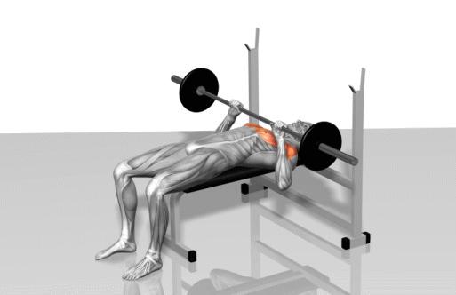
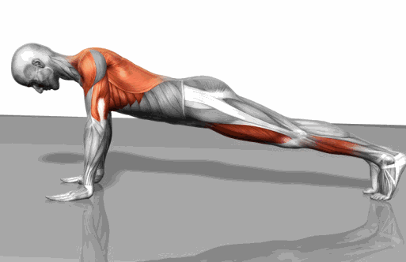

杠铃卧推
目标锻炼部位：主要锻炼整块胸大肌，打造整个胸部围度
动作要领：
1.采用宽握距，使胸大肌获得充分伸展和彻底收缩；要求躯干和胸部向上挺起成桥形，两肩下沉，横杠放在胸上置乳头上1厘米处；当杠铃推起至两臂伸直时，必须使胸大肌处于“顶峰收缩”状态，稍停。
2. 上推时用鼻子呼气，还原时用口吸气。
俯卧撑
目标锻炼部位：主要锻炼整块胸大肌群的线条和形态。
动作要领：
1.两手支撑在地上或支架上，两手间距比肩膀稍宽些，全臂伸直，两肩和胸略向前，使肩关节的垂直线与地面呈10度～15度角，两腿并拢，以脚趾点地支撑。躯干保持挺胸收紧腰。
2.抬头前引，使胸大肌有充分的伸展感，处于“顶峰收缩”位，稍停。向上撑起时，始终保持身体的姿势，直至两臂伸直。重复